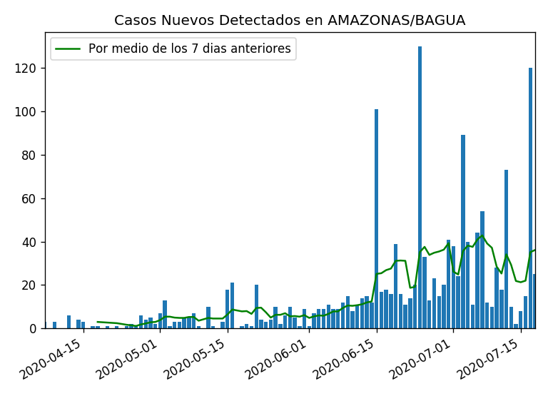
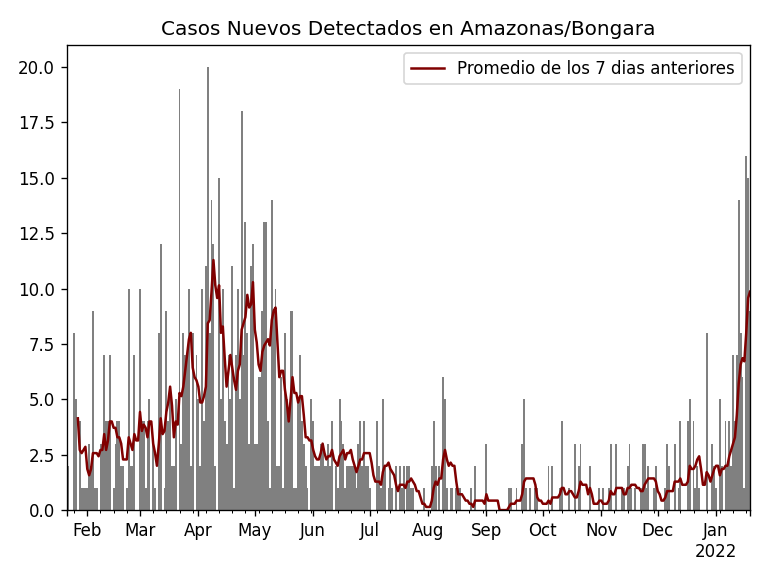
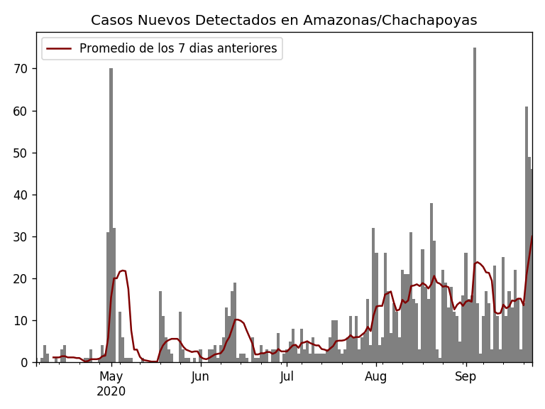
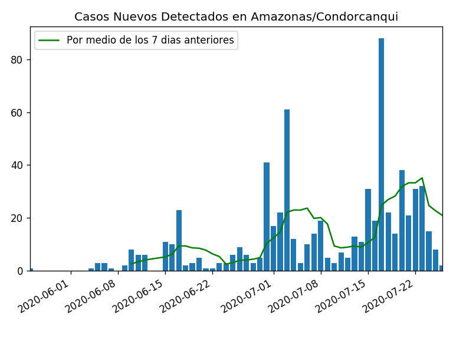
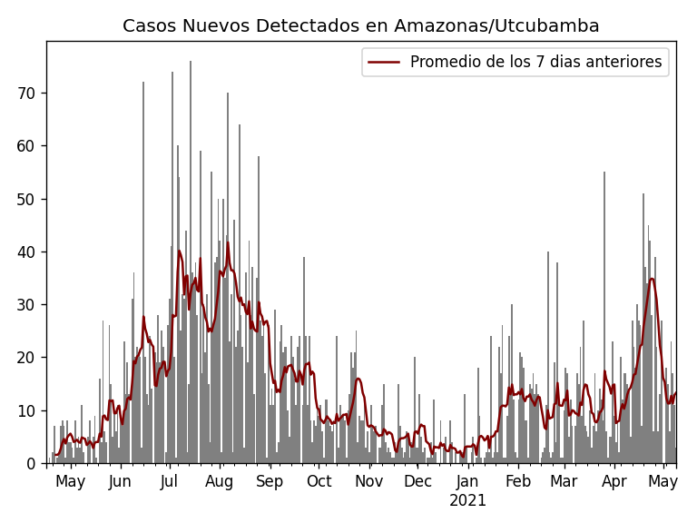
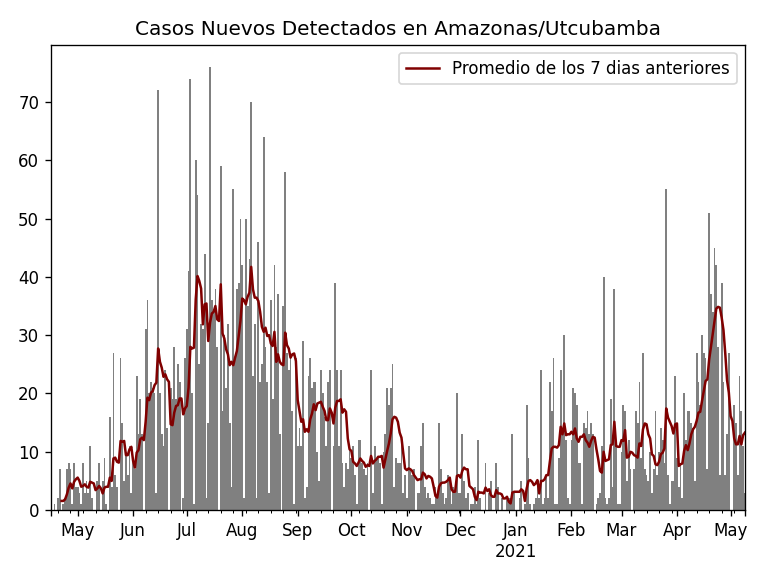
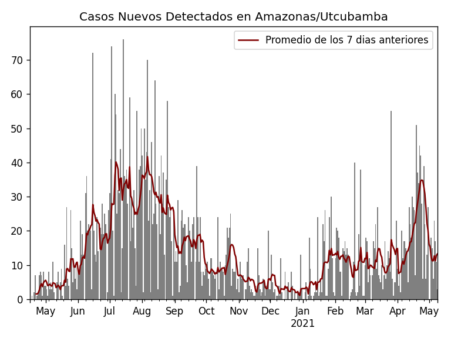

Casos de COVID-19 en AMAZONAS por Provincia
Seleccione la foto de una Provincia para ver sus detalles por Distrito.
Regresar a casos por Departamento





Fuente de los datos utilizados:
Instituto Nacional de Salud y Centro Nacional de Epidemiologia, prevención y Control de Enfermedades – MINSA.
Fuente del codigo
usado para generar este sitio web.

 
Fuente de los datos utilizados: Instituto Nacional de Salud y Centro Nacional de Epidemiologia, prevención y Control de Enfermedades – MINSA. Fuente del codigo usado para generar este sitio web.

Fuente de los datos utilizados: Instituto Nacional de Salud y Centro Nacional de Epidemiologia, prevención y Control de Enfermedades – MINSA. Fuente del codigo usado para generar este sitio web.